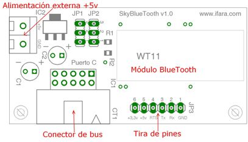

|
SkyBlueTooth |
La tarjeta SkyBlueTooth es un conversor de BlueTooth a una UART con niveles TTL de 5 voltios. Es una tarjeta compatible con la tarjeta SkyPic tanto a nivel
de señales de datos como alimentación, ya que la skyBlueTooth tiene un conversor DC-DC integrado para alimentar el módulo BlueTooth.
Con esta tarjeta seremos capaces de manejar cualquier tarjeta con interfaz de comunicaciones serie mediente BlueTooth.
BlueTooth CLASS 1.0
Tensión de alimentación 5v
Disponibilidad de las señales Tx y Rx tanto en un conector de pines como de bus de 10 vías
Andrés Prieto-Moreno :Esquema, PCB y primeras pruebas
Ricardo Gómez González :Esquema, PCB y primeras pruebas
La tarjeta SkyBlueTooth es HARDWARE LIBRE y tiene una licencia GPL (o lo mas parecido pero en versión Hardware). Esto quiere decir que se distribuye junto con TODOS sus esquemas (esquemáticos, rutado y ficheros de fabricación). Cualquiera tiene derecho a fabricarla, copiarla, modificarla, distribuirla o venderla siempre y cuando vaya acompañada de TODOS los esquemas.

|
|
Con los jumpers JP1 y JP2 podemos intercambiar las señales de transmisión y recepción del módulo BlueTooth en el conector de bus CT1.
|
|
|
Documentación |
| Datasheet del módulo BlueTooth WT11 |
|
Descarga de ficheros |
| skybluetooth.zip | Esquemático de la placa en formato EAGLE |
| skybluetooth.pdf | Esquemático de la placa en PDF |
| skybluetooth.bmp | Esquemático de la placa en formato BMP |
Bluegiga Technologies - Wireless data communication - Bluetooth: Página del fabricante del integrado WT11
16/Julio/2007: Publicada la versión 1.0 en la web
{kind=link}